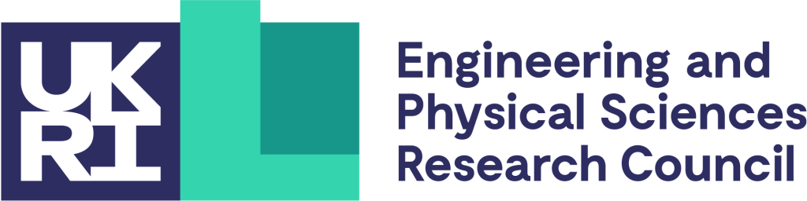

What? A third in a series of workshops on theoretical and applied aspects of water waves.
When? 28 - 30 August 2024 (TBC).
Where? University of Plymouth, UK.
For information on the previous Water Waves Workshop held in 2022, please click here.
For information on the previous Water Waves Workshop held in 2019, please click here.
Funded by the Institute of Mathematics & Its Applications, London Mathematical Society, Heilbronn Institute for Mathematical Research, and University of Plymouth.
